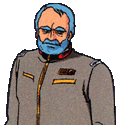
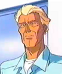
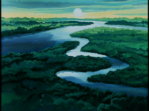
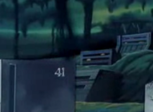

Jaburo Jaburo
South America, Amazon Rainforest, EFF Central Headquarters Coastal Jungle Urban Underground Super Fortress with attached Mine General Revil Somewhere deep within the jungles of South Africa, the fortress at Jaburo is undeniably the strongest fortress on Earth, and arguably the strongest fortress in the entire solar system. The sprawling complex is host to an entire city underground, complete with skyscrapers and enough logistical equipment to fuel the base even in the face of a nuclear winter. Its location is unknown to the Duchy of Zeon, every single defensive turret being designed to pop up out of the ground when needed, and enough aircraft present on base to even keep the Duchy out of low orbit. Jaburo also houses the Federations primary spaceport, and is the only spaceport in the entire planet that can actually house and service spacegoing vessels, taking them to an underground shipyard supported by the Amazon River.  General Revil An incredible general for the Federal forces, Revil has taken the position as de facto leader of Earth since the Zeon invasion, and has to date been present at every major battlefield. He was taken captive at the battle of Lourm, but managed to escape in his own right, appearing just in time to stop a Federation surrender at the signing of the Antarctic Treaty. He has since led the badly wounded Federation back to even footing with Zeon, even prior to the invention of Federation mobile suits. Now he wants to take the war back to them, determined to recover every inch of ground that was lost. Revil is a quiet man, but an incredible commander, plotting silently and quickly on the battlefield.  South Burning One of the most talented pilots in the Federation, Burning survived both the One Week War and Lourm in his Saberfish, and totalled several enemy kills in the fighter. He has been delegated a chief of the mobile suit defenses at Jaburo, and trains new mobile suit pilots who are gathered to the base. An excellent soldier and commander, he was one of the very first in the Federation to recieve the new GM units. Sleggar Law A top notch fighter pilot and even better womanizer, Sleggar is one of the Federations best aces who has yet to accept a mobile suit, believing that aircraft is and always will be "more manly." He seems alright with defending Jaburo, liking the glory of the fighter pilot more than the horror of war, but he is ready to accept reassignment at a moments notice. Jaburo  |